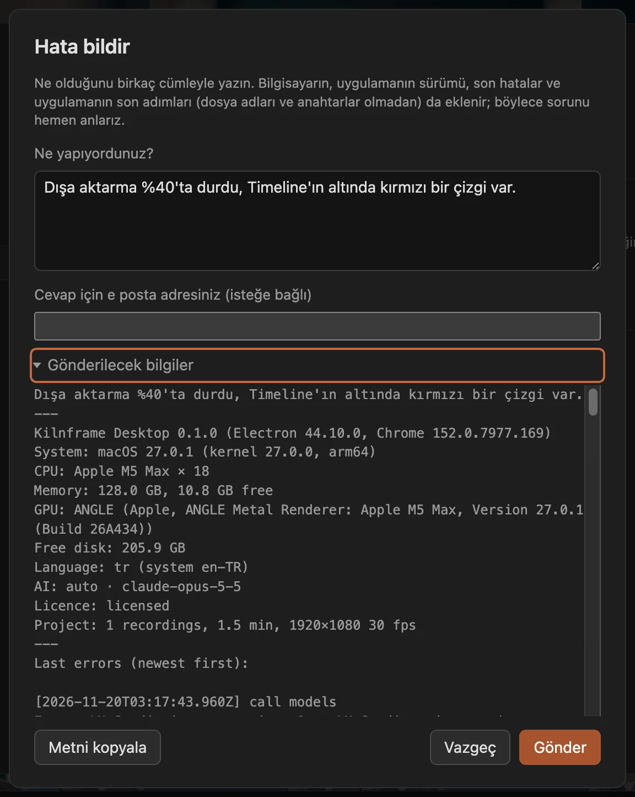

Hata bildir
Bir şey mi ters gitti, ya da bir fikrin mi var? Uygulamanın içinden yaz. Gönder'e basmadan hiçbir şey gitmez; neyin gideceğini önce görürsün.

Hata bildir
- AçYardım menüsünde ya da Ayarlar › Hakkında'da Hata bildir.
- Ne olduğunu söyleNe yapıyordunuz? Birkaç kelime yeter.
- Cevap istersen e-postanı bırakCevap için e posta adresiniz (isteğe bağlı).
- Neyin gittiğine bakGönderilecek bilgiler'i aç: uygulamanın sürümü, sistemin, işlemcin, belleğin, ekran kartın ve boş diskin, dil, seçili yapay zeka modeli, lisans durumu, projenin boyutu, son hatalar ve uygulamanın son adımları. Dosya adları ve anahtarlar yok; ana klasörün
~olarak yazılır. - GönderGönder'e bas. Gönderilemezse Metni kopyala ve hello@kilnframe.com adresine gönder.
Geri bildirim gönder
Geri bildirim gönder bir fikir, bir istek ya da sevmediğin bir şey için. Mesajın hello@kilnframe.com'a gider.
Neden önemli
Windows'ta ve Linux'ta Kilnframe Desktop bir Beta: bütün özellikler var ve bildirimler hızlı düzeltilmesini sağlıyor.